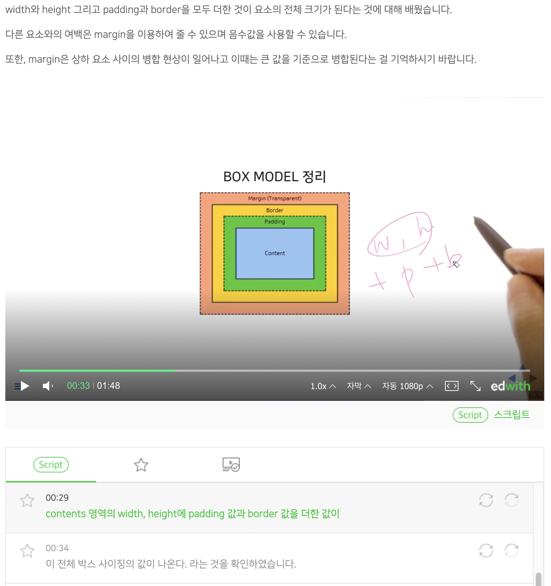
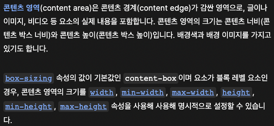
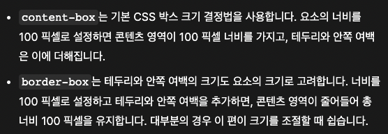

[해설]
박스의 크기는 boxmodel의 요소중 margin을 제외한 border, padding, content에 의해 결정 됩니다.
주어진 html page에서 box class로 정의되어진 박스는 css에서 상대길이 %로 정의되었습니다.
상대길이는 부모요소의 값에 따라 결정되는데, 부모인 section이 각각 400px씩으로 정의되어 있고,
박스는 50%(width), 75%(height)로 정의되었기 때문에
박스의 content 영역은 각각 200px(width) 300px(height) 정의됩니다.
padding은 지정되지 않아 값이 없고, border가 top, right, bottom, left가
모두 10px로 지정되어 있기 때문에
최종 박스의 크기는 content영역의 크기에 border 영역을 더한 값 220px x 320px 입니다.
[계산]
가로: 400px * 50% + 10px * 2 {좌우 border} = 220px
세로: 400px * 75% + 10px * 2 {상하 border} = 320px
[참조]
MDN 스크린샷의 경우 클릭하면 해당 페이지로 이동합니다.


